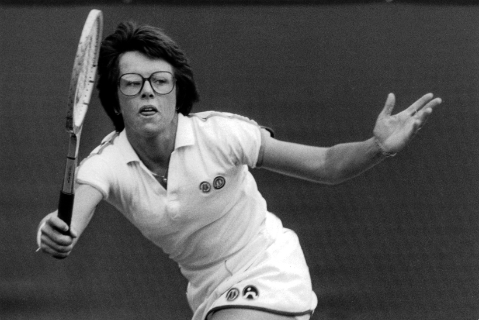
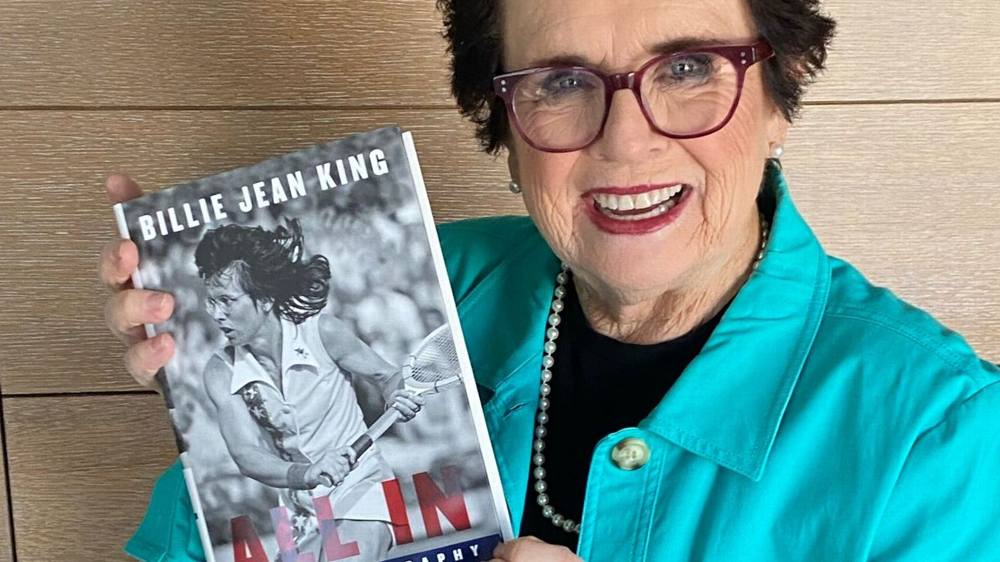

Inicio
Retiro

La ex jugadora estadounidense Billie Jean King, una de las personas más exitosas en la historia del tenis femenino, anunció su retiró como capitana del equipo de su país en la copa federación mientras que Zina Garrison, quién siguió como capitana del equipo durante todo el 2005. King lideró Estados Unidos a la conquista con 7 títulos como jugadora y 4 más en condición de capitán. En el 2003 se convirtió en entrnadora del equipo estadounidense mientra que Garrison ocupó el cargo de capitán.
Dejó las pistas en 1983. Desde entonces, no ha parado. Os comentaba antes que es casi tan conocida por su carrera como por su activismo social. Es una de las principales figuras del feminismo y de la defensa de los derechos del colectivo LGTB en Estados Unidos. Actualmente es directiva de la Women’s Sport Foundation, de la Andy Roddick Foundation y de la Elton John AIDS Foundation. Además, es fundadora de un buen número de organizaciones, como la WTA (la ATP femenina), la revista Women’s Sport Magazine, GreenSlam, un proyecto medioambiental para la industria del deporte o la Mylan WTT, un curiosísimo torneo tenístico mixto (se disputan cinco sets: uno entre hombres, otro entre mujeres, otro de dobles masculino, otro de dobles femenino y uno de dobles mixto). Ha escrito además unos cuantos libros.
